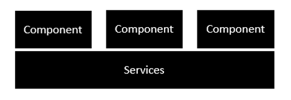
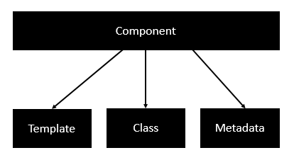
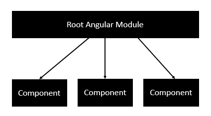
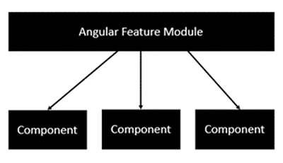
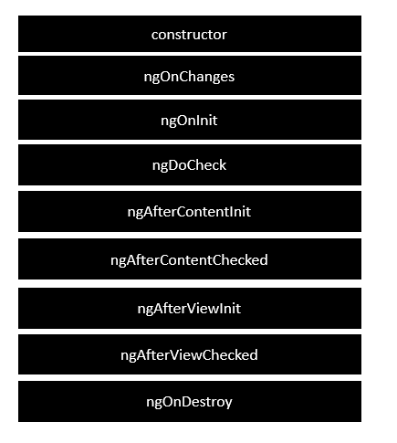

Learning Angular 2
Components: foco ao invés de controllers
TypeScript
Services: comportilhado por componentes diferentes
Components
Modules: cada módulo é desenvolvido para fazer uma tarefa específica
Component: usado para juntar os módulos
Templates: usados para definir as
views
Metadata: adicionar mais dados a uma classe AngularJS
Service: components que podem ser compartilhados
@NgModule e @Component são decorator
InfraEstrutura
 
Precisa ter um root module

Features Modules

Ciclo
